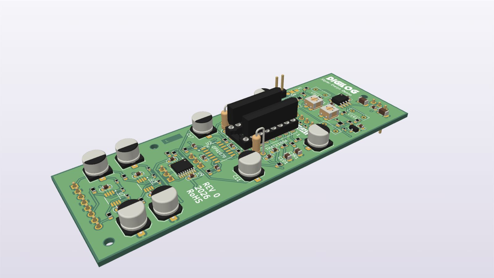

Skip to content
Skylar Denno
Email me
Digilog
Output card
The fader VCA card, one of the five analog mini-boards in Digilog

Reset view
Rendered from its STEP model. Drag to rotate, scroll or pinch to zoom, and right-drag or use two fingers to pan.
Input card
EQ card
Comp card
Sends card
Output (fader VCA)